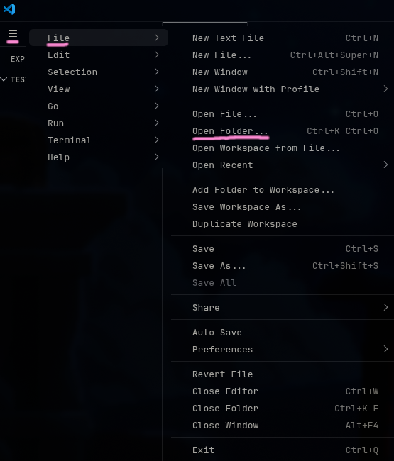
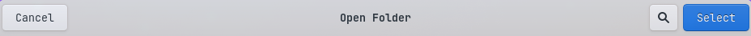
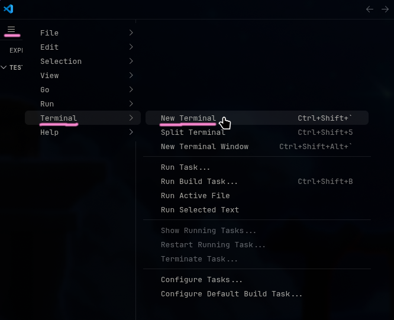
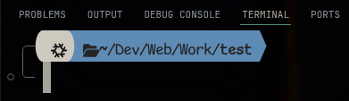
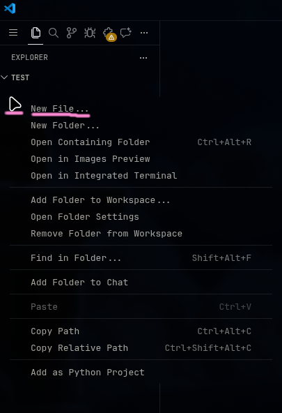
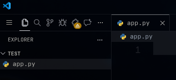

Windows
Linux
Открытие папки с проектом

1) Зайдите в Visual Studio Code
2) Нажмите на иконку бургерного меню
3) Нажмите file / файл
4) Нажмите open folder / открыть папку

5) Выберите нужную папку и нажмите select / выбрать
Создание виртуального окружения (дом для библиотек)

6) Нажмите на иконку бургерного меню
7) Нажмите terminal для создания терминала со вводом команд
8) Нажмите new terminal

Терминал открыт!
!! Прописываем следующие команды в терминале
| Создаём папку, в которой будут лежать все наши библиотеки, включая flask
python -m venv venv
python - наш язык программирования
-m venv - используем модуль venv (virtual environment / виртуальное окружение), чтобы его создать
venv - название папки внутри проекта, где будет лежать наше виртуальное окружение
| Активируем виртуальное окружение
.\venv\Scripts\activate
.\ - наша текущая папка
\venv\Scripts\activate - путь до файла activate, который запускает наше виртуальное окружение
Установка пакетов (pip)
| Устанавливаем flask
pip install flask
pip - наш менеджер пакетов, который скачивает их в папку venv
install flask - установка фреймворка flask, который нужен для создания веб-приложений
Создание главного файла

6) Нажмите правой кнопкой мыши в этом окне программы
7) Создайте новый файл и назовите его app.py

Готово!